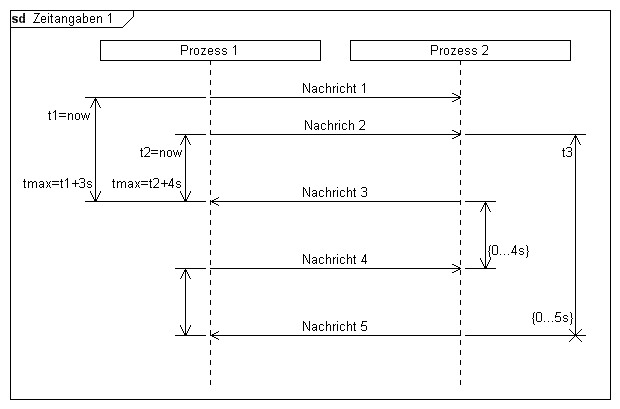
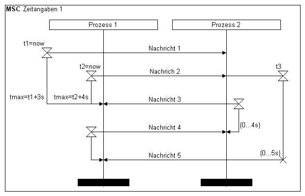

Syntax
Parameter
Syntax
Parameter
 timerid
instanceid
text (optional)
orientation (optional)
timerid
instanceid
text (optional)
orientation (optional)
| Wert | Bedeutung |
|---|---|
| l | Die Zeitangabe wird links von der Lebenslinie dargestellt |
| r | Die Zeitangabe wird rechts von der Lebenslinie dargestellt |
style (optional)
| Wert | Bedeutung |
|---|---|
| n | Die Zeitangabe wird nah an der Lebenslinie gezeichnet |
| o | Die Zeitangabe wird entfernt von der Lebenslinie gezeichnet, die Textposition ist außen. |
| i | Die Zeitangabe wird entfernt von der Lebenslinie gezeichnet, die Textposition ist innen. |
Beispiel
|
DiagramName: Zeitangaben 1 DiagramStyle: uml PageSize: 620,auto PageMargins: 10,10,10,10 process: p1, "Prozess 1",,70 process: p2, "Prozess 2",,0,20 timerbegin: t1, p1, t1=now,l,o msg: p1, p2, Nachricht 1; timerbegin: t2, p1, t2=now,l,n timerbegin: t3, p2, t3,r,i msg: p1, p2, Nachrich 2; ; timerbegin: t4, p2,,r,n msg: p2, p1, Nachricht 3 timerend: t1, tmax=t1+3s timerend: t2, tmax=t2+4s; ; timerbegin: t5, p1 msg: p1, p2, Nachricht 4 timerend: t4,{0...4s}; ; msg: p2, p1, Nachricht 5 timerend: p5 timerend: p3, {0...5s},*; |
 |
|
DiagramName: Zeitangaben 1 DiagramStyle: sdl PageSize: 620,auto PageMargins: 10,10,10,10 process: p1, "Prozess 1",,70 process: p2, "Prozess 2",,0,20 timerbegin: t1, p1, t1=now,l,o msg: p1, p2, Nachricht 1; timerbegin: t2, p1, t2=now,l,n timerbegin: t3, p2, t3,r,i msg: p1, p2, Nachrich 2; ; timerbegin: t4, p2,,r,n msg: p2, p1, Nachricht 3 timerend: t1, tmax=t1+3s timerend: t2, tmax=t2+4s; ; timerbegin: t5, p1 msg: p1, p2, Nachricht 4 timerend: t4,{0...4s}; ; msg: p2, p1, Nachricht 5 timerend: p5 timerend: p3, {0...5s},*; |
 |
Siehe auch